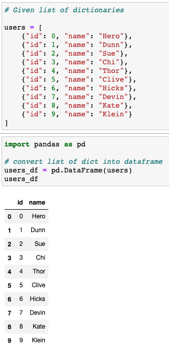
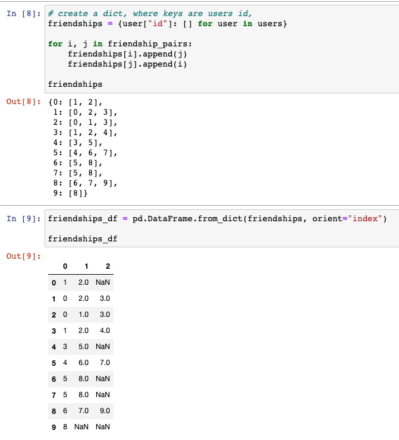
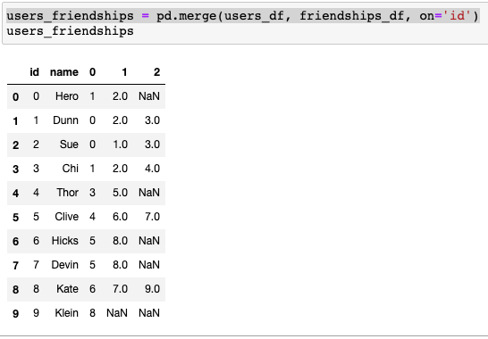
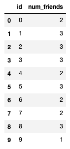
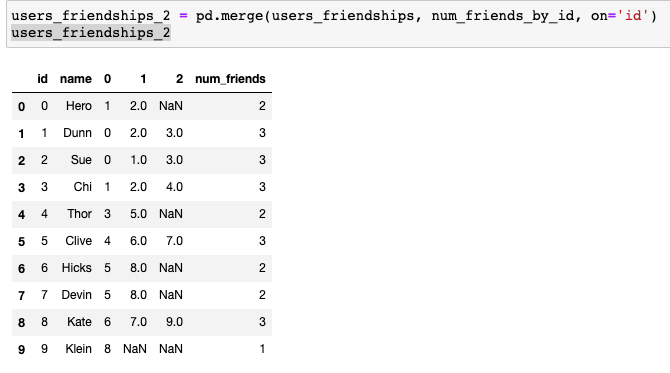
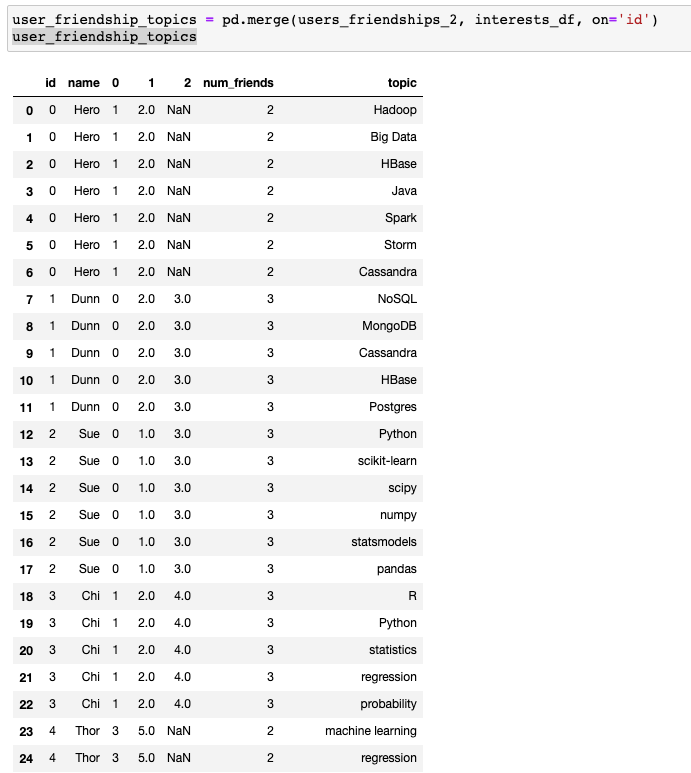
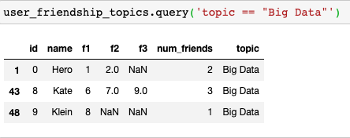

An alternative to for-loops
Solving data problems in multiple ways
Lists vs. DataFrames
A couple days back I wrote a post summarizing chapter 1 of Data Science from Scratch, which reviewed what I saw were frequently used Python data operations, namely collections and comprehensions.
After providing a Python crash course in chapter 2, I went back to chapter 1 to examine the author’s toy example establishing the narrative of a newly hired data scientist on her first day at the job.
The author had been explicit about avoiding frameworks (i.e., Pandas, Numpy) and it was clear the author would take a pure Python approach to introducing and solving problems.
I saw how much Collections and Comprehension were used. Data was provided in the form of lists, either lists of dictionaries or tuples. And to answer questions about the data, the author often used list comprehensions - iterating through lists with a for-loop. I am beginning to see this as a very Python-centric way of approaching problems.
I went through the toy examples and considered how the hypothetical problems were introduced and addressed (I thought it was very well done and am confident in proceeding with this book); however, there was one question I kept wondering:
What about data frames?
I had imagined myself as a newly hired data scientist for the fictional company - Data Scienster - who had been given some data about the social network of data scientists and I couldn’t help but wonder:
Would I really be given data stored in lists, over data frames?
As a long-time Excel, then R, user, this goes against my assumptions about data. I realize there is unstructured data and that not all data is tabular data, I get that. But so much of data is tabular data I feel like it’s reasonable to begin here (note: I’m open to other perspectives here, feel free to leave a comment below!).
In any case, I had this incredible itch to go back to that chapter and ask:
How would I approach the same problem using data frames?
So that’s what this post is about. You can reference these previous post for context; also keep in mind, this is a brief detour and deviation from Joel Grus’ book (for example, I’ll be using pandas here and a jupyter notebook here, both of which are avoided in the book). I plan on continuing with the book, but data frames are too much apart of how I think about data to ignore for a whole book.
For review, here’s the data you, dear reader, are given as a newly hired data scientist at Data Scienster™
# users in the network
# stored as a list of dictionaries
users = [
{"id": 0, "name": "Hero"},
{"id": 1, "name": "Dunn"},
{"id": 2, "name": "Sue"},
{"id": 3, "name": "Chi"},
{"id": 4, "name": "Thor"},
{"id": 5, "name": "Clive"},
{"id": 6, "name": "Hicks"},
{"id": 7, "name": "Devin"},
{"id": 8, "name": "Kate"},
{"id": 9, "name": "Klein"}
]
# friendship pairings in the network
# stored as a list of tuples
friendship_pairs = [(0,1), (0,2), (1,2), (1,3), (2,3), (3,4),
(4,5), (5,6), (5,7), (6,8), (7,8), (8,9)]
# interests data
# stored as another list of tuples
interests = [
(0, "Hadoop"), (0, "Big Data"), (0, "HBase"), (0, "Java"),
(0, "Spark"), (0, "Storm"), (0, "Cassandra"),
(1, "NoSQL"), (1, "MongoDB"), (1, "Cassandra"), (1, "HBase"),
(1, "Postgres"), (2, "Python"), (2, "scikit-learn"), (2, "scipy"),
(2, "numpy"), (2, "statsmodels"), (2, "pandas"), (3, "R"), (3, "Python"),
(3, "statistics"), (3, "regression"), (3, "probability"),
(4, "machine learning"), (4, "regression"), (4, "decision trees"),
(4, "libsvm"), (5, "Python"), (5, "R"), (5, "Java"), (5, "C++"),
(5, "Haskell"), (5, "programming langauges"), (6, "statistics"),
(6, "probability"), (6, "mathematics"), (6, "theory"),
(7, "machine learning"), (7, "scikit-learn"), (7, "Mahout"),
(7, "neural networks"), (8, "neural networks"), (8, "deep learning"),
(8, "Big Data"), (8, "artificial intelligence"), (9, "Hadoop"),
(9, "Java"), (9, "MapReduce"), (9, "Big Data")
]
Given just these pieces of data, we can create functions, use for-loops and list comprehensions to answer some questions like:
- Who are each user friends with?
- What are the total and average number of connections?
- Which users share the same interest?
- What are the most popular topics in this network?
However, the chapter ends with lists, functions and comprehension. What about storing data in data frames?
I contend that you could answer the above questions with data frames, and I found myself wanting to combine all three pieces of data into one data frame.
First we’ll store users as a data frame:
import pandas as pd
# convert list of dict into dataframe
users_df = pd.DataFrame(users)
users_df
Just visually, a data frame looks different from a list of dictionaries:

Your mileage may vary, but I make sense of the data very differently when I’m looking at a list vs a data frame. Old habits die hard and rows and columns are ingrained in me. But I digress.
Next, we’re given a list of tuples representing friendship pairs and we proceed to turn that into a dictionary by using a dictionary comprehension:
# list of tuples
friendship_pairs = [(0,1), (0,2), (1,2), (1,3), (2,3), (3,4),
(4,5), (5,6), (5,7), (6,8), (7,8), (8,9)]
# create a dict, where keys are users id,
# dictionary comprehension
friendships = {user["id"]: [] for user in users}
for i, j in friendship_pairs:
friendships[i].append(j)
friendships[j].append(i)
Similar to the previous example, I find that viewing the data as a data frame is different from viewing it as a dictionary:

From this point, I’m doing several operations in pandas to join the first two tables, such that I have a column with the user’s id, user’s name and the id of their first, second or, in some cases, third friends (at most people in this network have 3 direct connections).
If you want to know the specific pandas operation, here’s the code:
# The users_df is fine as is with two columns: id and name (see above)
# We'll transform the friendships_df
# reset_index allows us to add an index column
friendships_df.reset_index(inplace=True)
# add index column
friendships_df = friendships_df.rename(columns = {"id":"new column name"})
# change index column to 'id'
friendships_df = friendships_df.rename(columns = {'index':'id'})
# join with users_df so we get each person's name
users_friendships = pd.merge(users_df, friendships_df, on='id')
Once we’ve joined users_df and friendships_df, we have:

Since we have users and friendships data, we could write a function to help us answer “how many friends does each user have?". In addition, we’ll have to create a list comprehension so we loop through each user within users:
# function to count how many friend each user has
def number_of_friends(user):
"""How many friends does _user_ have?"""
user_id = user["id"]
friend_ids = friendships[user_id]
return len(friend_ids)
# list comprehension to apply the function for each user
num_friends_by_id = [(user["id"], number_of_friends(user)) for user in users]
# this gives us a list of tuples
num_friends_by_id
[(0, 2),
(1, 3),
(2, 3),
(3, 3),
(4, 2),
(5, 3),
(6, 2),
(7, 2),
(8, 3),
(9, 1)]
Again, viewing the data as a list of tuples is different from a data frame, so let’s go ahead and turn that into a pandas data frame:
# when converting to data frame, we can set the name of the columns to id and num_friends; this sets us up for another join
num_friends_by_id = pd.DataFrame(num_friends_by_id, columns = ['id', 'num_friends'])
Because we have an ‘id’ column, we can join this with our previously created users_friendships data frame:

Once joined with users_friendships using the merge function, we get (users_friendships2):

By now you’re familiar with the process. We have a Python collection, generally a list of dictionaries or tuples and we want to convert them to a data frame.
We’ll repeat this process for the interests variable which is a long list of tuples (see above). We’ll convert to data frame, then join with users_friendships_2 to get a longer data frame with interests as one of the columns (note: picture is cut for space):

The nice thing about pandas is that once you have all your data joined together in a data frame, you can query the data.
For example, I may want to see all users have an interest in “Big Data”:

Previously, we would have had to create a function that returns a list comprehension:
def data_scientists_who_like(target_interest):
"""Find the ids of all users who like the target interests."""
return [user_id
for user_id, user_interest in interests
if user_interest == target_interest]
data_scientists_who_like("Big Data")
Paul Apivat Hanvongse
Self-Employed | Getwyze
My interests include data visualization, data analytics and data science.